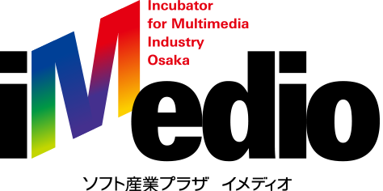

こんにちは世界！
Rails Girls が再び大阪にやってきます！二日間のワークショップの間に、Ruby on Railsのすてきな世界を体験してみませんか？ワークショップは無料です。
応募フォームを公開しました！こちらから応募してください。
Hello world!
Rails Girls comes to Osaka! During the free two-day workshop we'll dive into the magical world of Ruby on Rails.
Apply now! Applications are open until the end of May.
概要 コーチに教えてもらいながらプログラムを設計して、プロトタイプを作り、コーディングします。
必要なもの 自分のノートパソコン、やる気とキラリと光るイマジネーションを持ってきてください！
コーチとしてお手伝いいただける方を募集しています！ お手伝いいただける方はこちらからお申し込みをお願いいたします。
| 16:00 - 18:00 |
インストール・デーご自分のノートパソコンをお持ちください。それぞれのパソコンにRubyとRailsをインストールし、Rubyプログラミングの最初の一歩をコーチとともに始めてみましょう。インストールできている方は、この日は参加しなくても大丈夫です。 |
|---|
| 9:00 - 10:00 |
レジストレーション |
|---|---|
| 10:00 - 10:30 |
オープニング |
| 10:30 - 11:00 |
座学「RubyとRailsのおいしい使い方」 |
| 11:00 - 12:30 |
ワークショップ |
| 12:30 - 13:30 |
ランチ |
| 13:30 - 14:00 |
ライトニングトークス１ |
| 14:00 - 17:00 |
ワークショップ |
| 17:00 - 17:30 |
ライトニングトークス２ |
| 18:00 - 20:00 |
アフター・パーティ参加者、コーチ、スタッフによるパーティです。ワークショップで聞き損ねたことやRubyやRailsのこと、ステップアップの方法など、コーチに気軽に質問してみましょう。 |
参加申し込みページを公開しました！
先着順の受付になります。参加をご希望される方はお早めのお申込みをお願いいたします。
会場:
ソフト産業プラザイメディオ 地図
大阪市住之江区南港北2-1-10 ATCビルITM棟 6階
Rails Girls Osaka はすばらしいパートナーとの共同開催です。（順不同）
 ソフト産業プラザイメディオ は、大阪市のIT・映像・ゲーム・アニメなどデジタルメディア産業の振興拠点として、人と情報が交差するハブ機能を果たすことを目的としたインキュベータ施設です。創業期の企業育成やIT,IoT,WEB,3DCADなどに関する制作技術・トレンドセミナーを開催。Rails Girls Osakaの開催場所として参加者の皆さんとイベントを盛り上げていきたいと思います！
 GitHub はソフトウェアの共同開発をするための最高の環境を開発・提供しています。1000 万人以上のユーザーが友だち、同僚、クラスメートと、時にはまったく知らない人とでさえ、コードなどを共有して素晴らしいプロジェクトを行っています。
GitHub はソフトウェアの共同開発をするための最高の環境を開発・提供しています。1000 万人以上のユーザーが友だち、同僚、クラスメートと、時にはまったく知らない人とでさえ、コードなどを共有して素晴らしいプロジェクトを行っています。
 株式会社アジャイルウェア は、アジャイル開発により価値を素早く提供する、Rubyのスペシャリストが集まる会社です。100%自社内でRailsによるWebシステム開発を行っています。Rails製プロジェクト管理ツールRedmineのプラグイン開発や販売も拡大中です。お客様満足だけでなく開発者満足も重視。完全フレックス制でプログラマが最も働きやすい時間帯に仕事ができ、適材適所に努めています。
株式会社アジャイルウェア は、アジャイル開発により価値を素早く提供する、Rubyのスペシャリストが集まる会社です。100%自社内でRailsによるWebシステム開発を行っています。Rails製プロジェクト管理ツールRedmineのプラグイン開発や販売も拡大中です。お客様満足だけでなく開発者満足も重視。完全フレックス制でプログラマが最も働きやすい時間帯に仕事ができ、適材適所に努めています。
 株式会社アルメディア・ネットワーク では技術者集団として開発・インフラネットワーク・医療情報の3分野にて顧客満足を私達の存在価値として日々業務に努めています。2010年よりRubyの取組を強化し、関西地方で”Rubyビジネス推進協議会”設立・運営に寄与貢献しています。そして今後はRubyコミュニティと一緒に成長して行きたい考えています。
株式会社アルメディア・ネットワーク では技術者集団として開発・インフラネットワーク・医療情報の3分野にて顧客満足を私達の存在価値として日々業務に努めています。2010年よりRubyの取組を強化し、関西地方で”Rubyビジネス推進協議会”設立・運営に寄与貢献しています。そして今後はRubyコミュニティと一緒に成長して行きたい考えています。
 日本Rubyの会は、Rubyの利用者の支援とRuby(とRubyのライブラリ)開発者の支援を目的とした一般社団法人です。現在は、ドキュメントの整備や、イベントへの参加協力等を中心に活動しています。
日本Rubyの会は、Rubyの利用者の支援とRuby(とRubyのライブラリ)開発者の支援を目的とした一般社団法人です。現在は、ドキュメントの整備や、イベントへの参加協力等を中心に活動しています。
参加費はどのくらいかかりますか？ 無料です。申し込むときにはわくわくした気持ちだけあればいいです。
どのような人が参加するのでしょうか？ コンピュータを使ったことがある女性ならだれでも参加できます。 これまでに開催されたRails Girlsイベントには様々な年齢の女性がやってきました。 ご自分のノートパソコンをお持ちください。
男性も参加できますか？ 参加できます。ただし、必ずウェブアプリを作りたがっている女性と一緒に参加してください。 申し込み人数が多い場合はお断りすることがありますので、ご了承ください。
プログラミングの経験があります。手伝うことはできますか？ はい！Rails Girls Osaka ではコーチとしてお手伝いしてくださる方を募集しています。 お手伝いいただける方はこちらからお申し込みをお願いいたします。
メールでのお問い合わせ こちらのメールアドレス宛にお問い合わせください。